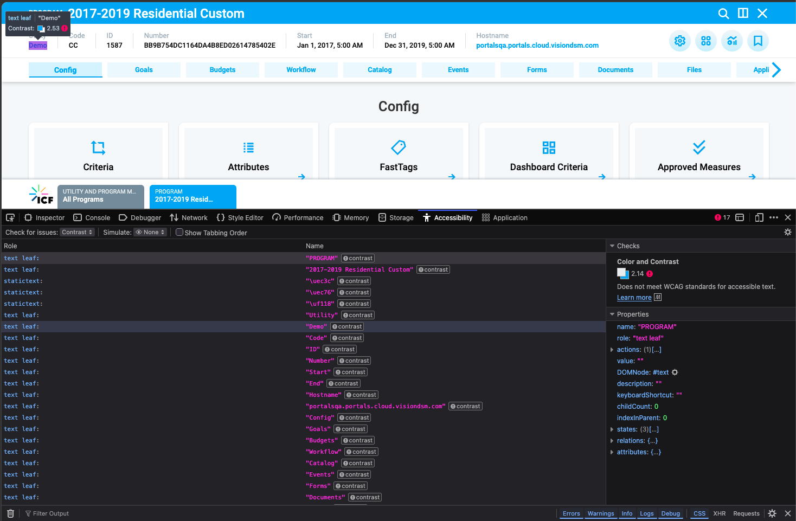
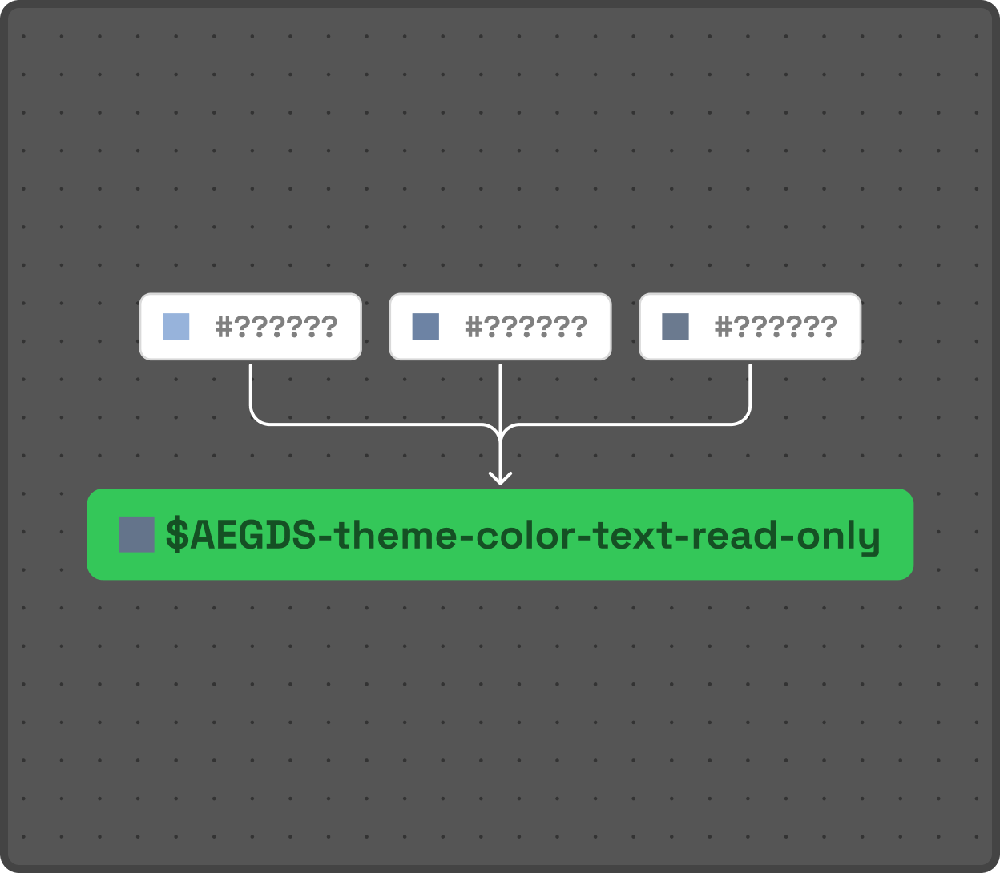
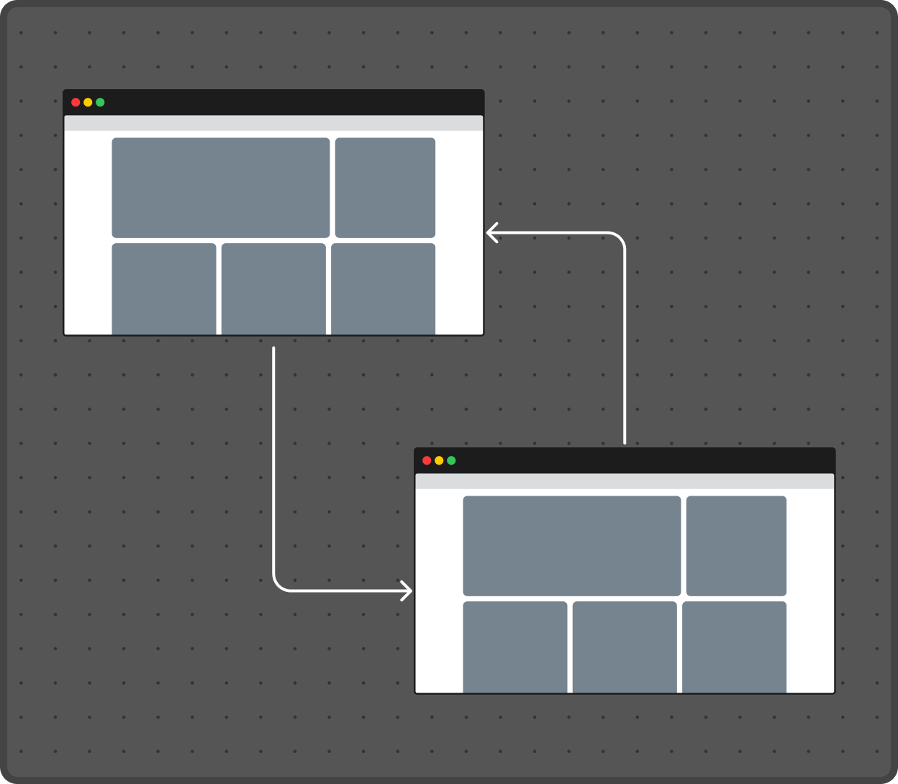
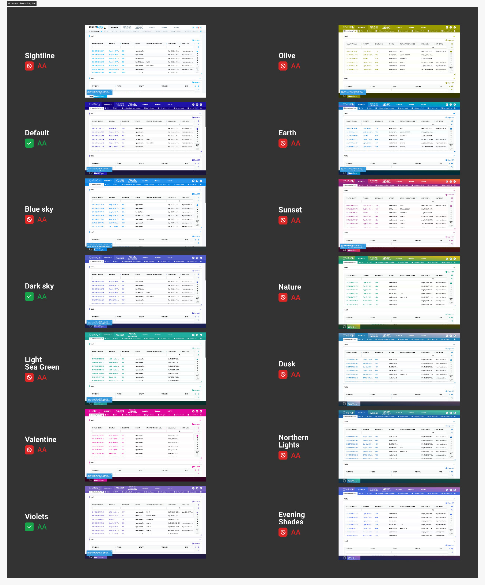
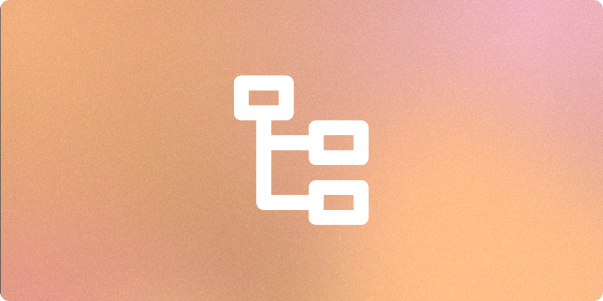
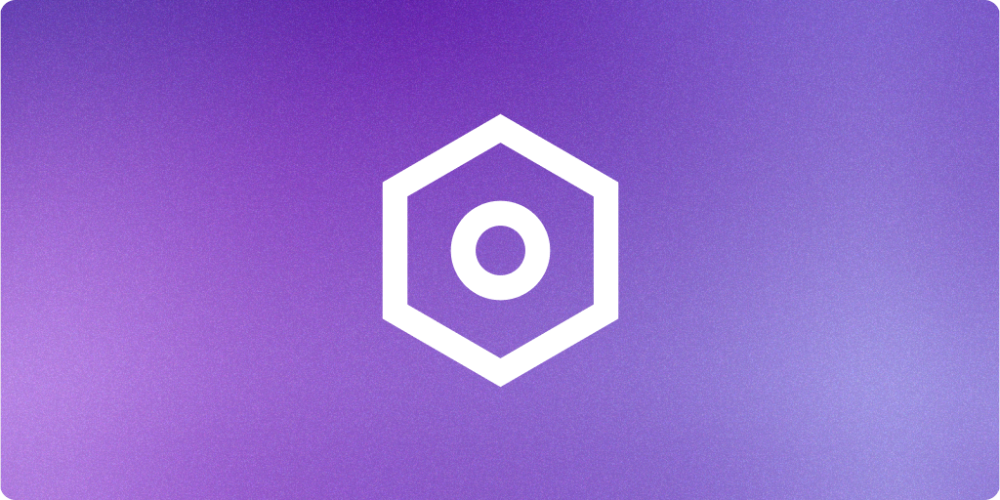

Tags:
UI
Accessibility
Refactoring color tokens across 15 themes to improve maintainability, support light and dark modes, and make accessible UI decisions easier to implement.
The existing color-token structure made consistency, accessibility, and theme maintenance increasingly difficult.
The challenge was to simplify the underlying system while supporting 15 themes, light and dark modes, and more accessible interfaces.
existing tokens
themes
Modes: Light and dark
Contrast issues found in a single page:


This separated color values from their purpose, making the system easier to maintain and adapt without managing every component individually.

I reworked the token structure to create a clearer relationship between base colors, semantic roles, and UI components.
I focused on keeping color roles consistent across themes and light and dark modes, while allowing their underlying values to adapt.
The goal was to preserve visual hierarchy and usability while making theme updates more predictable.
↳ Semantic tokens made dark mode easier to maintain by enabling theme-level changes without rebuilding components.

I focused on identifying contrast issues and resolving them through the token system rather than relying solely on individual UI fixes.
The workflow combined contrast validation, suitable token alternatives, and visual review to support more accessible and consistent interfaces.

The refactor aimed to improve:
Clearer definitions for design and engineering.

Clearer color usage across components and themes.

Simpler updates through semantic tokens.
A repeatable approach to identifying and resolving contrast issues.
The key takeaway: a well-structured design system makes good design decisions easier to apply, validate, and maintain as a product evolves.